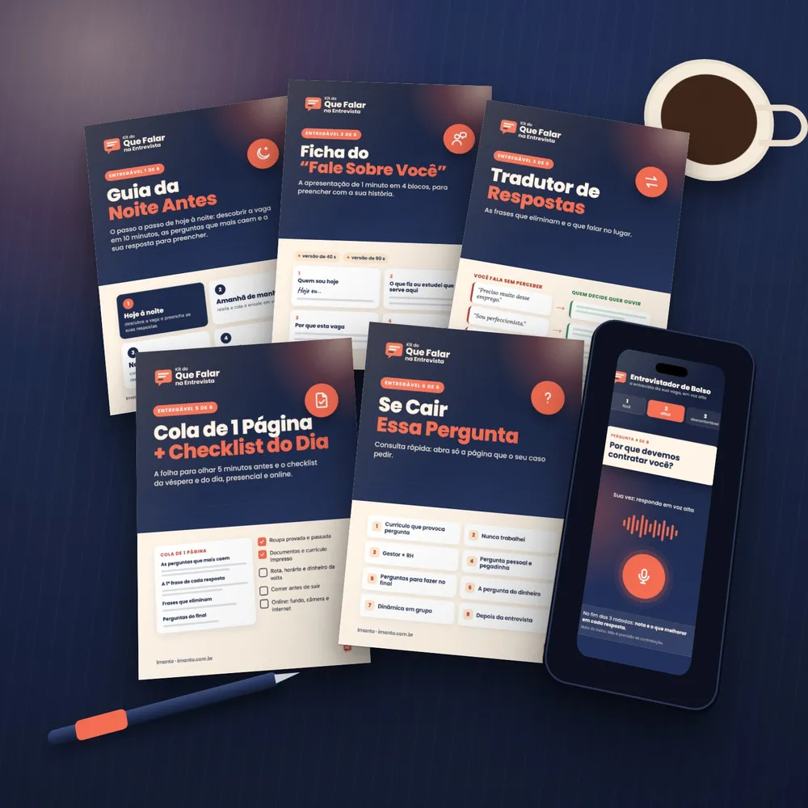

Por Matheus Nattan, empresário que já contratou gente para cinco áreas
Teste grátis · 2 minutos · sem cadastro
Por que eu travo na entrevista? Descubra a sua trava.
São 7 perguntas rápidas. No fim, você vê onde está a sua trava e o que fazer hoje.
1Chegar sem roteirocada pergunta vira surpresa
2O branco do treinovocê sabe, mas a boca não acompanha
3A primeira perguntao “fale sobre você” derruba o resto
Ninguém vai te pedir e-mail nem telefone.
Antes de continuar, uma coisa que pouca gente fala.
O nervoso, sozinho, raramente é o que elimina.
Já contratei gente para cinco áreas, e do lado de cá da mesa a gente vê muita gente de voz tremendo e mão suando.
O que pesa é outra coisa: chegar sem saber o que dizer.
As próximas 4 perguntas mostram onde está a sua trava.
Lendo as suas respostas…
- Juntando o que você respondeu
- Achando onde está a sua trava
- Montando o que fazer hoje
Seu resultado
No seu caso:

O que resolve isso hoje à noite
Tudo isso no Kit do Que Falar na Entrevista: pagamento único, com 7 dias de garantia.
Resultado de um teste rápido, para te orientar. Não é avaliação profissional.
Imanto · Privacidade · Este site não é afiliado ao Facebook.